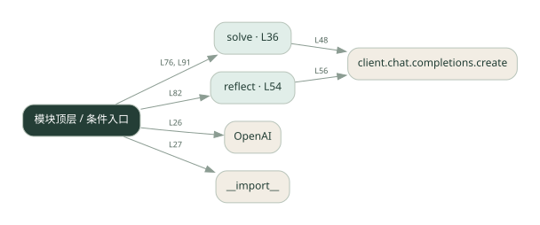

1-7 · 全课程第 7 节
反思与修订
007.py
源码快照 0e84ce68cc9e · 静态解析 · 2026-09-10
01 / 要完成的事
先回答，再让模型检查答案，最后根据检查意见修订。
02 / 为什么要做
第一版可能遗漏约束；独立一轮检查有机会补上。
03 / 当前代码状态
存在外部服务或模型依赖；执行前需按源文件配置依赖和凭据，可能联网或产生 API 费用。 本次只做静态解析，没有运行练习，也没有替你填写或修改原代码。
04 / 调用图
打开大图 ↗实线：源码中的直接调用；虚线：函数引用/注册、动态调用或按方法名推断的候选。L 是调用所在源码行号。箭头不表示执行顺序或每次必经；分支、循环、异步调度及框架内部调用需结合源码。灰色是外部/未解析目标，橙色是动态分发；省略 print、len 和常规容器操作以减少干扰。孤立函数可能尚未接入。

先从 模块入口 出发，沿箭头找到本文件函数，再查看外部调用或动态分发。右侧调用清单保留所有静态调用点，能回到原文件逐行对照。
05 / 函数定位
| 函数 / 定义行 | 职责（源码注释） | 内部调用 |
|---|---|---|
solveL36 | 让 LLM 解一道题。feedback 是上一轮反思的意见（可选） | messages.append, client.chat.completions.create |
reflectL54 | 让 LLM 反思自己的答案，找出错误 | client.chat.completions.create |
这样做的优点
把检查意见保留下来，便于比较修改前后。
代价与局限
同一个模型可能重复自己的错误；多一轮反思不等于验证为真。
适用场景
可以用明确条件检查的草稿、解释或解题过程。
不宜直接照搬
必须由真实数据或确定性测试保证正确的关键判断。
动手检验理解
给答案加一个可检查的限制，比较反思是否指出违反之处。
有未实现位置时先预测，再补齐验证。能启动不等于逻辑正确。
查看全部 22 个静态调用 / 引用点
| 调用方 | 目标 | 源码行 | 类型 |
|---|---|---|---|
| <模块入口> | OpenAI | 26 | 调用 |
| <模块入口> | __import__ | 27 | 调用 |
| solve | messages.append | 45 | 调用 |
| solve | messages.append | 47 | 调用 |
| solve | client.chat.completions.create | 48 | 调用 |
| reflect | client.chat.completions.create | 56 | 调用 |
| <模块入口> | print | 71 | 调用 |
| <模块入口> | print | 72 | 调用 |
| <模块入口> | print | 73 | 调用 |
| <模块入口> | print | 75 | 调用 |
| <模块入口> | solve | 76 | 调用 |
| <模块入口> | print | 77 | 调用 |
| <模块入口> | print | 79 | 调用 |
| <模块入口> | print | 80 | 调用 |
| <模块入口> | print | 81 | 调用 |
| <模块入口> | reflect | 82 | 调用 |
| <模块入口> | print | 83 | 调用 |
| <模块入口> | print | 85 | 调用 |
| <模块入口> | print | 86 | 调用 |
| <模块入口> | print | 87 | 调用 |
| <模块入口> | solve | 91 | 调用 |
| <模块入口> | print | 92 | 调用 |